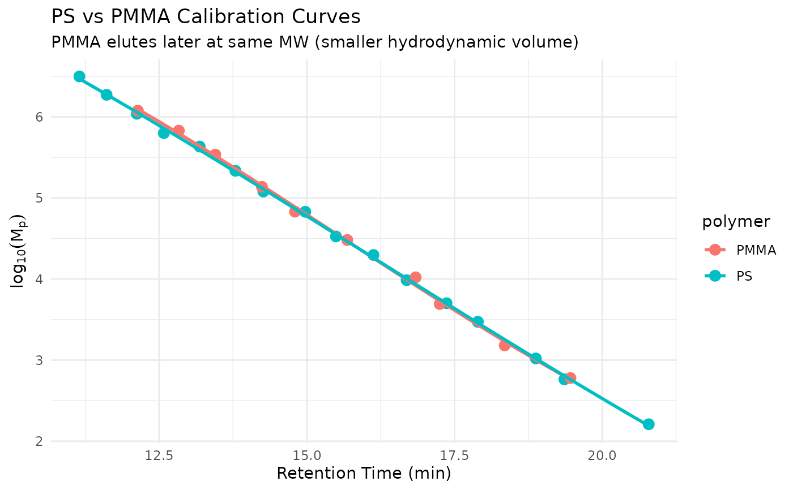

Poly(methyl methacrylate) narrow molecular weight standards for SEC/GPC
calibration. A convenient subset of sec_calibration_standards
containing only PMMA standards.
Format
A tibble with 10 rows and 12 columns:
- standard_name
Character. Standard identifier (e.g., "PMMA-67700")
- mp
Numeric. Peak molecular weight in Da
- log_mp
Numeric. log10(Mp) for calibration curve fitting
- retention_time
Numeric. Peak retention time in minutes
- retention_volume
Numeric. Peak retention volume in mL
- mn
Numeric. Number-average molecular weight in Da
- mw
Numeric. Weight-average molecular weight in Da
- dispersity
Numeric. Polydispersity index (Mw/Mn)
- mp_uncertainty
Numeric. Relative uncertainty in Mp
- k_value
Numeric. Mark-Houwink K constant (0.000128 mL/g)
- a_value
Numeric. Mark-Houwink exponent (0.690)
- dn_dc
Numeric. Refractive index increment (0.084 mL/g)
Details
PMMA standards are useful for:
Calibrating for PMMA or acrylate samples
Validating universal calibration by comparing PS vs PMMA curves
Demonstrating polymer-specific hydrodynamic volume differences
At equivalent molecular weight, PMMA has a smaller hydrodynamic volume than PS in THF, so PMMA standards elute later than PS of the same MW. This demonstrates why conventional calibration is polymer-specific.
Universal Calibration Validation: When plotted as log(M * [eta]) vs retention time, PS and PMMA should fall on the same curve, confirming universal calibration is valid for the column.
See also
sec_calibration_standards for full dataset with PS
sec_ps_standards for polystyrene standards
step_sec_universal_cal for universal calibration
Other sec-data:
sec_branched,
sec_calibration_standards,
sec_copolymer,
sec_protein,
sec_ps_standards,
sec_system_suitability,
sec_triple_detect
Other sec-calibration:
load_sec_calibration(),
save_sec_calibration(),
sec_calibration_standards,
sec_ps_standards,
step_sec_broad_standard(),
step_sec_conventional_cal(),
step_sec_universal_cal()
Examples
data(sec_pmma_standards)
data(sec_ps_standards)
# Compare PS and PMMA calibration curves
if (requireNamespace("ggplot2", quietly = TRUE)) {
library(ggplot2)
library(dplyr)
bind_rows(
sec_ps_standards |> mutate(polymer = "PS"),
sec_pmma_standards |> mutate(polymer = "PMMA")
) |>
ggplot(aes(retention_time, log_mp, color = polymer)) +
geom_point(size = 3) +
geom_smooth(method = "lm", formula = y ~ poly(x, 3), se = FALSE) +
labs(
x = "Retention Time (min)",
y = expression(log[10](M[p])),
title = "PS vs PMMA Calibration Curves",
subtitle = "PMMA elutes later at same MW (smaller hydrodynamic volume)"
) +
theme_minimal()
}
